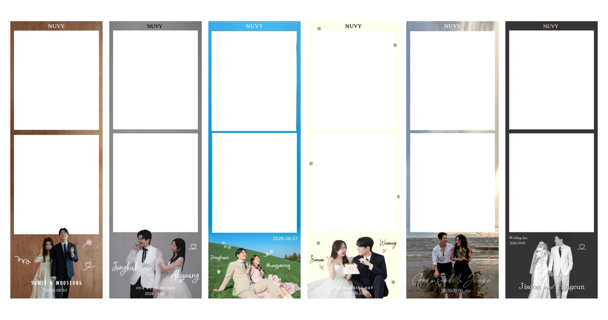

NUVY
NUVY WEDDING GUIDE
우리의 순간을
누비다
마음을 꺼내, 사진에 담습니다.
01 / ABOUT NUVY
NOT JUST
A PHOTO BOOTH.
누비포토는 사진과 함께, 그날의 경험을 남깁니다.
함께 웃은 순간, 하객이 건넨 마음, 두 분이 오래 간직할 기록까지.
사진보다 오래 남는 건,
그날의 마음.
02 / YOUR WEDDING
YOUR WEDDING,
YOUR FRAME.
두 분의 결혼식을 위해 준비한 사진 프레임.
웨딩의 분위기와 두 분의 취향에 맞춰 프레임을 제작합니다.

01MOOD예식의 분위기를
담고
담고
02FRAME두 분만의
프레임으로 만들고
프레임으로 만들고
03PHOTO사진은 바로
인화하고
인화하고
04DIGITAL그날의 기록은
오래 남깁니다.
오래 남깁니다.
03 / ON YOUR WEDDING DAY
STEP IN.
TAKE A PHOTO.
LEAVE A MEMORY.
01
STEP IN
하객이 편하게 부스에 들어와 사진을 찍습니다.
02
TAKE A PHOTO
현장에서 안내하며 자연스럽게 사진을 남깁니다.
03
사진은 현장에서 바로 인화됩니다. 필요한 수량만큼 자유롭게 가져갈 수 있습니다.
04
LEAVE A MEMORY
사진과 함께 두 분에게 남겨질 마음과 기록을 완성합니다.
04 / WHAT NUVY PREPARES
사진 한 장이
완성되기까지.
PHOTOBOOTH이동형 포토부스
CUSTOM FRAME웨딩 맞춤 프레임
PRINT현장 즉석 인화
STAFF현장 운영 및 안내
QR DOWNLOAD사진 · 영상 · 원본 디지털 기록
MEMORY웨딩 방명록 및 기록
※ 실제 구성은 웨딩의 공간과 일정에 따라 상담 후 조정됩니다.
“
하객에게는 한 장의 사진을,
두 분에게는 그날의 기록을.
05 / WHAT REMAINS
WHAT REMAINS.
결혼식이 끝난 뒤에도 그날의 사진은 남습니다.
FOR GUESTS사진을
가져갑니다.
가져갑니다.
FOR COUPLE추억을
간직합니다.
간직합니다.
현장에서 인화된 사진과 함께 QR을 통해 디지털 사진·영상·원본을 확인할 수 있도록 기록을 남깁니다.
06 / BEFORE YOU BOOK
먼저 이것만
확인해주세요.
DATE예식 날짜와 시간
VENUE웨딩홀 / 행사 장소
SPACE포토부스 설치 공간
POWER전원 사용 가능 여부
STYLE원하는 웨딩 분위기와 프레임
문의주실 때 날짜 · 장소 · 원하는 시간대를 함께 보내주시면 보다 빠르게 안내해드릴 수 있습니다.
NUVY WEDDING
우리의 순간을
누비다.
마음을 꺼내, 사진에 담습니다.
두 분의 가장 좋은 날에 함께하겠습니다.